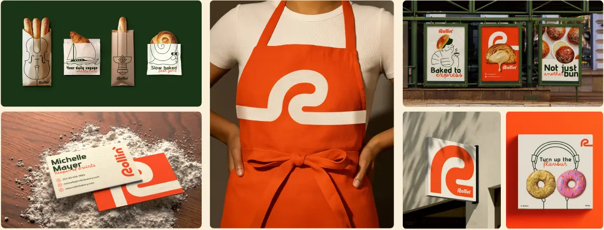

Brand positioning
A distinctive foundation for how the bakery enters the market, speaks and grows.
Brand creation + e-commerce
Tritactix created Rollin from the ground up—building the strategy, identity and applications, then carrying the same character into a complete e-commerce experience.

01 · The assignment
Rollin needed one connected idea across every touchpoint. Tritactix shaped the brand foundation, created the full identity system and stayed through execution—from packaging and physical applications to the digital storefront.
The work was designed as a complete brand ecosystem rather than a collection of separate outputs.
A distinctive foundation for how the bakery enters the market, speaks and grows.
Logo, colour, typography and composition built for consistent recognition.
Friendly, witty and light—playful without becoming sarcastic or childish.
Everyday objects reimagined through bread, pastry and bakery culture.
Packaging, labels, uniforms, outdoor communication and collateral.
A branded storefront that turns identity into a clear digital buying journey.
02 · The identity
A flexible toolkit gives Rollin its recognisable personality while keeping every execution connected to the same world.
Made to feel human, generous and easy to enjoy.
Advent Pro creates impact while DM Sans keeps information effortless to read.
Familiar objects are rebuilt through pastry and bakery references.
Modular elements adapt across packaging, retail, print and digital layouts.
03 · The commerce experience
The e-commerce experience translated Rollin’s warmth and clarity into a usable buying journey, keeping product discovery, selection and conversion inside one recognisable brand system.
Colour, typography and visual rhythm extend naturally into the digital storefront.
Products, categories and actions are organised around a clear customer journey.
Brand strategy, applications and e-commerce work together as one market-facing experience.
From a new identity to a complete commercial experience, Tritactix stays from strategy through execution.